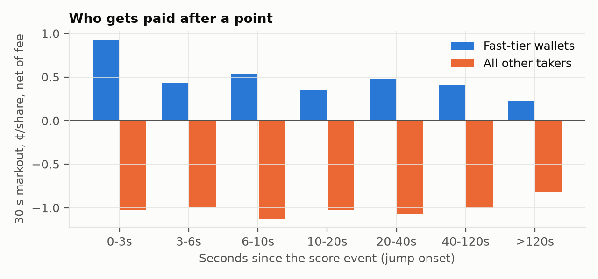
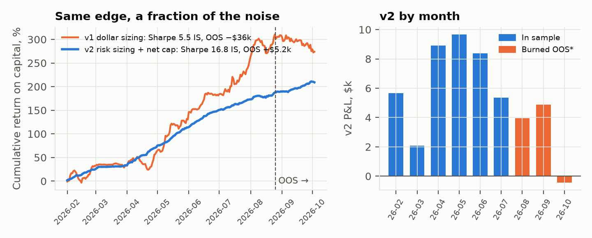

Gator Quant Hacks 2026 · Systematic Trading · Repo: github.com/OjasMishra32/courtside · Reproduce: python run_all.py --oos, python scripts/v2_burned_oos.py
A tennis point ends in tiers. Ball tracking knows where the ball will land while it is still in the
air; the umpire knows at the bounce; licensed data feeds, and the market makers on them, know about a
second later; TV, streams and score widgets know tens of seconds later. Match-win probability is a
known function of the score, and we built the exact point-level Markov chain (src/markov.py). So
every point moves fair value by a computable amount, its leverage. A simulated ATP best-of-3 has
~161 points with mean |leverage| 5.7%, and fair value travels $4.20 per share over the match.
Who is on the other side? Whoever is acting on an older tier. A trader who knows the point before
the book reprices buys from a stale quote; a trader who acts after it pays the spread to someone
faster. The gaps are physical (camera frame rates, data licensing, stream delays), so they persist.
Polymarket's own design admits it: sports markets hold every marketable order for 1 s (3 s before May
2026) so makers can reprice. Hypotheses were committed before any result (HYPOTHESIS.md, commit
7232986; v2 in HYPOTHESIS_V2.md). Every change since then is in DEVIATIONS.md.
rate·q(1−q) per share; rate 0, 0.03, then 0.05) and its own order delay. We measured that tape
timestamps are on-chain block times, a median 1.98 s after the true match time (5,472 trades
joined to the live websocket by transaction hash).results/oos_peeks.log). Forward: matches that
start after 2026-10-03 13:00 UTC, the blind test for v2.Table 1. Tests, net of fees and traded spreads (¢/share; 95% CI clustered by match).
| Test | In sample | Out of sample (opened once) | Verdict |
|---|---|---|---|
| H1 Follow the jump after the delay | −1.61 [−1.65, −1.57]; all 20 variants −1.5 to −1.9 | −2.08 [−2.17, −1.98] | Fails |
| H2 Buy favourites entering 0.85–0.97 | −0.41 [−1.44, 0.59]; live prices calibrated within ~1¢ | +0.80 [−1.36, 2.66] | No edge |
| H5 Maker quoting after jumps | +0.22 [−0.01, 0.43] | +0.16 [−0.49, 0.87] | Inconclusive |
| H6 Fast tier, 30 s markout, walk-forward | +0.6 to +2.4, 8/8 months > 0 | +0.4 to +0.8, 3/3 months > 0 | Holds |
| Everyone else in the same 0–3 s window | −0.5 to −1.7, every month | −1.2 to −1.9 | |
| Copying the fast tier 3 s later | < 0 every month | < 0 every month | Edge is speed |

Fig. 1. 30 s markout per taker print, net of fee, by seconds since the score event. Fast-tier wallets are qualified each month using earlier months only.Chasing the move loses, and live prices are calibrated, so slow money has no edge. What exists is a persistent fast tier: wallets that trade within 3 s of a score event and beat the market every month, in sample and out. The other side of their trades is the ~1¢ a share that everyone else loses. Copying them with a lag loses too, so the edge is speed and cannot be followed.
v1 (the fast tier's trades, ≤$1k each, held to resolution) earned +1.16¢/share in sample but lost
$36k out of sample. Big tickets on cheap tokens made its P&L a lottery. Six optimisation lenses then
ran on in-sample data only, each checked by two adversarial verifiers (research/v2/). The survivors
are frozen as v2 (HYPOTHESIS_V2.md, src/v2.py):
Refuted and dropped: maker exits. They looked like Sharpe 10 on the tape, but the verifiers found a wrong tick size. On live books a resting exit after a jump filled only 36% of the time within a minute. When it did fill, the price kept running another 5.5¢; when it did not, the price fell 5.6¢. That is adverse selection.
Table 2. v2, net of fees, held to resolution.
| In sample, Feb–Aug 2026 | Burned OOS, Aug 25–Oct 3 (non-blind) | Forward, from Oct 3 13:00 UTC (blind) | |
|---|---|---|---|
| Trades / matches | 67,468 / 7,782 | 13,184 / 2,093 | [FWD_N] |
| Net per share | +1.59¢ [1.35, 1.81] | +0.75¢ [0.30, 1.20] | [FWD_RES] |
| 30 s markout per share (primary forward test) | +1.18¢ | — |
[FWD_M30] |
| P&L / capital (3× peak locked) | +$43.3k / $23.2k | +$5.2k / $8.6k | [FWD_PNL] |
| Sharpe / max DD / worst day | 16.8 / −4.0% / −2.1% | 11.1 / −5.2% / −3.3% | |
| Months positive | 7/7 (worst month +$2.1k) | 2/3 (Oct = 3 days, −$0.4k) |

Fig. 2. v1 vs v2, return on each book's own capital, and v2 P&L by month (*Aug includes IS days).The Sharpe is high because v2 places ~330 small, nearly independent bets a day, each held to an exogenous binary outcome, with net exposure capped per match. It is not a single tuned spike. In the sizing study, all nine net-cap/deployment settings have per-share CIs above zero, with Sharpe 9.9–16.8, and Sharpe moves smoothly with the cap.
| Signal | When it knows the point, vs the official WTA point timestamp |
|---|---|
| Ball tracking, Hawk-Eye class (physics) | 100–300 ms before the bounce: ±2.4 cm landing error at 100 ms, ±10.7 cm at 300 ms |
| Ball tracking, real 120 fps video (table tennis) | misses called 50 ms before contact: 11/11 correct on held-out games; demo clips with calls at 408, 83 and 25 ms |
| Ball tracking, 25 fps broadcast (tennis) | useless: 0.6–1.2 m landing error |
| Polymarket book (market makers) | −1.2 s (reprices before the official stamp), n = 482 points |
| Kalshi | leads Polymarket on 69% of 106k repricings, by ~2 s once block lag is removed; 6.1× Polymarket's in-play volume |
| ESPN / Polymarket sports feed / WTA API | +27.5 s / +29.1 s / +43.3 s; 0 of 295 changes beat the book by > 1.3 s |
Market makers already sit on the official feed, and Kalshi is where prices are discovered. Remote traders on public data are the slow tier. No public feed beats the book, and a Kalshi→Polymarket laggard trade nets ≈0 today. The fast tier needs a signal that arrives before the official feed: in-venue, high-frame-rate ball tracking. Our results show where that lead comes from (frame rate and camera count) and how large it is (tens to hundreds of ms on top of a ~1 s official-feed lag). Infrastructure: Polymarket's API sits behind Cloudflare's Miami edge, with a 67 ms median one-way feed delay from Gainesville and an origin consistent with London. Co-locating there saves ~130 ms per round trip, and that decides queue order behind the 1 s delay.
Strategy variants backtested: 44 (H1–H6) plus 3,342 across the six v2 lenses (exit 902, sizing 111,
selection 341, cross-market 68, latency 16, Kalshi 1,904). All are reported in results/ and
research/v2/, along with their verifier reports. The expected best Sharpe from luck over this many trials is ~4.8 (Bailey & López de Prado); v2 shows 16.8 in sample and 11.1 on the burned OOS. The v2 forward test is the clean check. The v2 book trades the fast tier's own
fills. It measures the opportunity at that speed, not our execution, which would need in-venue
tracking plus a co-located gateway. One verifier noted that the "0–3 s after onset" label uses a
detector that fires up to 10 s later; Section 4's figures include those trades.
[DETECT_STRESS] References: Bailey & López de Prado (2014); Harvey, Liu & Zhu (2016); Klaassen &
Magnus (2001); Voeikov et al. (2020) TTNet/OpenTTGames; Huang et al. (2019) TrackNet; Polymarket and
Kalshi API docs.